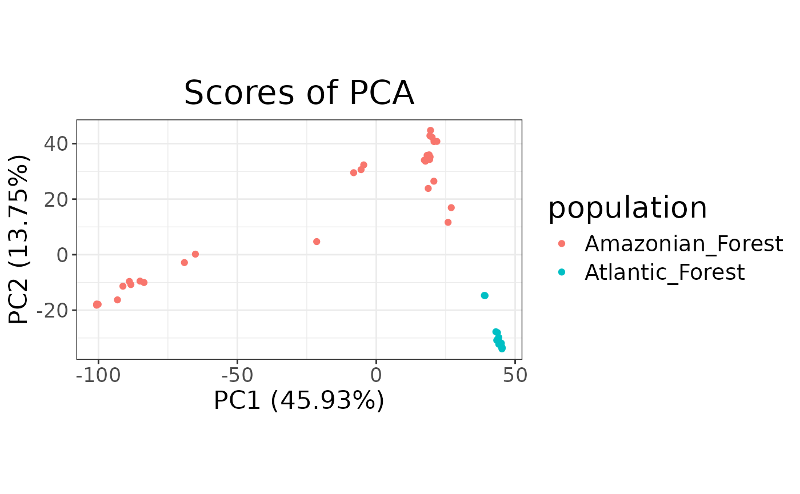
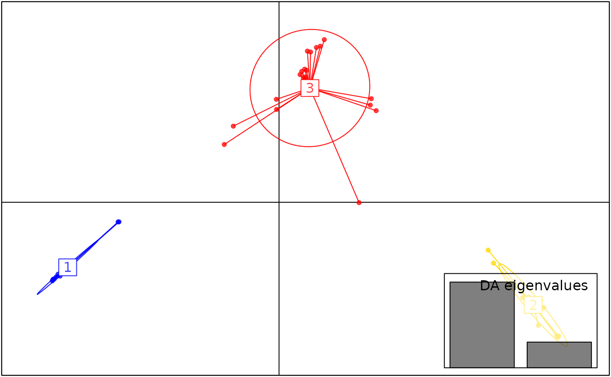
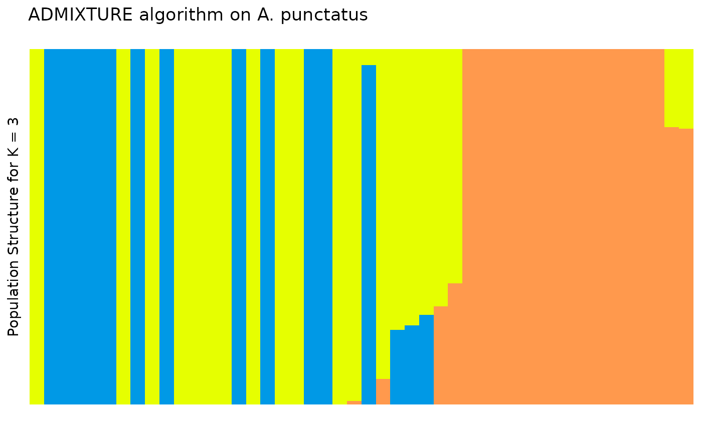

Example workflow with tidypopgen
a03_example_clustering_and_dapc.RmdAn example workflow with real data
We will explore the genetic structure of Anolis punctatus in South America, using data from Prates et al 2018. We downloaded the vcf file of the genotypes from “https://github.com/ivanprates/2018_Anolis_EcolEvol/blob/master/data/VCFtools_SNMF_punctatus_t70_s10_n46/punctatus_t70_s10_n46_filtered.recode.vcf?raw=true” and compressed it to a vcf.gz file.
We read in the data from the compressed vcf with:
library(tidypopgen)
#> Loading required package: dplyr
#>
#> Attaching package: 'dplyr'
#> The following objects are masked from 'package:stats':
#>
#> filter, lag
#> The following objects are masked from 'package:base':
#>
#> intersect, setdiff, setequal, union
#> Loading required package: tibble
vcf_path <- system.file("/extdata/anolis/punctatus_t70_s10_n46_filtered.recode.vcf.gz",
package = "tidypopgen")
anole_gt <- gen_tibble(vcf_path, quiet = TRUE, backingfile = tempfile("anolis_"))Now let’s inspect our gen_tibble:
anole_gt
#> # A gen_tibble: 3249 loci
#> # A tibble: 46 × 2
#> id genotypes
#> <chr> <vctr_SNP>
#> 1 punc_BM288 1
#> 2 punc_GN71 2
#> 3 punc_H1907 3
#> 4 punc_H1911 4
#> 5 punc_H2546 5
#> 6 punc_IBSPCRIB0361 6
#> 7 punc_ICST764 7
#> 8 punc_JFT459 8
#> 9 punc_JFT773 9
#> 10 punc_LG1299 10
#> # ℹ 36 more rowsWe can see that we have 46 individuals, from 3249 loci. Note that we don’t have any information on population from the vcf. That information can be found from another file on the github repository (“https://github.com/ivanprates/2018_Anolis_EcolEvol/raw/master/data/plot_order_punctatus_n46.csv). We will have add the population information manually. Let’s start by reading the file:
pops_path <- system.file("/extdata/anolis/plot_order_punctatus_n46.csv",
package = "tidypopgen")
pops <- readr::read_csv(pops_path)
#> Rows: 46 Columns: 3
#> ── Column specification ────────────────────────────────────────────────────────
#> Delimiter: ","
#> chr (2): ID, pop
#> dbl (1): plot_order
#>
#> ℹ Use `spec()` to retrieve the full column specification for this data.
#> ℹ Specify the column types or set `show_col_types = FALSE` to quiet this message.
pops
#> # A tibble: 46 × 3
#> ID plot_order pop
#> <chr> <dbl> <chr>
#> 1 BM288 18 Eam
#> 2 GN71 21 Eam
#> 3 H1907 6 Wam
#> 4 H1911 4 Wam
#> 5 H2546 7 Wam
#> 6 IBSPCRIB0361 34 AF
#> 7 ICST764 31 AF
#> 8 JFT459 37 AF
#> 9 JFT773 38 AF
#> 10 LG1299 44 AF
#> # ℹ 36 more rowsThe ids from the VCF are in a different format than the ones we just got from the pop csv. We need a bit of string wrangling, but it looks easy, we just need to remove “punc_”:
Let us simplify the ids, which will have a “punc_” prefix
anole_gt <- anole_gt %>% mutate(id = gsub('punc_',"",.data$id,))
anole_gt
#> # A gen_tibble: 3249 loci
#> # A tibble: 46 × 2
#> id genotypes
#> <chr> <vctr_SNP>
#> 1 BM288 1
#> 2 GN71 2
#> 3 H1907 3
#> 4 H1911 4
#> 5 H2546 5
#> 6 IBSPCRIB0361 6
#> 7 ICST764 7
#> 8 JFT459 8
#> 9 JFT773 9
#> 10 LG1299 10
#> # ℹ 36 more rowsNow we can bring in the pop information:
anole_gt <- anole_gt %>% mutate(population = pops$pop[match(pops$ID,.data$id)])
anole_gt
#> # A gen_tibble: 3249 loci
#> # A tibble: 46 × 3
#> id genotypes population
#> <chr> <vctr_SNP> <chr>
#> 1 BM288 1 Eam
#> 2 GN71 2 Eam
#> 3 H1907 3 Wam
#> 4 H1911 4 Wam
#> 5 H2546 5 Wam
#> 6 IBSPCRIB0361 6 AF
#> 7 ICST764 7 AF
#> 8 JFT459 8 AF
#> 9 JFT773 9 AF
#> 10 LG1299 10 AF
#> # ℹ 36 more rowsPCA
That was easy. The loci had already been filtered and cleaned, so we don’t need to do any QC. Let us jump straight into analysis and run a PCA:
anole_pca <- anole_gt %>% gt_pca_partialSVD(k=30)
#> Error: You can't have missing values in 'X'.OK, we jumped too quickly. There are missing data, and we need first to impute them:
anole_gt <- gt_impute_simple(anole_gt, method = "mode")And now:
anole_pca <- anole_gt %>% gt_pca_partialSVD(k=30)Let us look at the object:
anole_pca
#> === PCA of gen_tibble object ===
#> Method: [1] "partialSVD"
#>
#> Call ($call):gt_pca_partialSVD(x = ., k = 30)
#>
#> Eigenvalues ($d):
#> 351.891 192.527 113.562 104.427 87.615 83.476 ...
#>
#> Principal component scores ($u):
#> matrix with 46 rows (individuals) and 30 columns (axes)
#>
#> Loadings (Principal axes) ($v):
#> matrix with 3249 rows (SNPs) and 30 columns (axes)The print function (implicitly called when we type the
name of the object) gives us information about the most important
elements in the object (and the names of the elements in which they are
stored).
We can extract those elements with the tidy function,
which returns a tibble that can be easily used for further analysis,
e.g.:
tidy(anole_pca, matrix="eigenvalues")
#> # A tibble: 30 × 3
#> PC std.dev cumulative
#> <int> <dbl> <dbl>
#> 1 1 51.9 51.9
#> 2 2 28.4 80.3
#> 3 3 16.7 97.0
#> 4 4 15.4 112.
#> 5 5 12.9 125.
#> 6 6 12.3 138.
#> 7 7 10.2 148.
#> 8 8 9.92 158.
#> 9 9 9.13 167.
#> 10 10 8.80 176.
#> # ℹ 20 more rowsWe can return information on the eigenvalues,
scores and loadings of the pca. There is also an
autoplot method that allows to visualise those elements
(type screeplot for eigenvalues, type scores
for scores, and loadings for loadings:
autoplot(anole_pca, type="screeplot")
To plot the sample in principal coordinates space, we can simply use:
autoplot(anole_pca, type ="scores")
autoplots are deliberately kept simple: they are just a
way to quickly inspect the results. They generate ggplot2
objects, and so they can be further embellished with the usual
ggplot2 grammar:
library(ggplot2)
autoplot(anole_pca, type = "scores") +
aes(color = anole_gt$population) +
labs(color = "population")For more complex/publication ready plots, we will want to add the PC
scores to the tibble, so that we can create a custom plot with
ggplot2. We can easily add the data with the
augment method:
anole_gt <- augment(anole_pca , data = anole_gt)And now we can use ggplot2 directly to generate our
plot:
anole_gt %>% ggplot(aes(.fittedPC1, .fittedPC2, color = population)) +
geom_point()We can see that the three population do separate nicely on the PCA, with just one individual from Wam sitting in-between the other Wam individuals and those from Eam.
It is also possible to inspect which loci contribute the most to a given component:
autoplot(anole_pca, type = "loadings")
By using information from the loci table, we could easily embellish the plot, for example colouring by chromosome or maf.
For more complex plots, we can augment the loci table with the
loadings using augment_loci():
anole_gt_load <- augment_loci(anole_pca, data= anole_gt)Explore population structure with DAPC
DAPC is a powerful tool to investigate population structure. It has the advantage of scaling well to very large datasets. It does not have the assumptions of STRUCTURE or ADMIXTURE (which also limits its power).
The first step is to determine the number of genetic clusters in the
dataset. DAPC can be either used to test a a-priori hypothesis, or we
can use the data to suggest the number of clusters. In this case, we did
not have any strong expectations of structure in our study system, so we
will let the data inform the number of possible genetic clusters. We
will use a k-clustering algorithm applied to the principal components
(allowing us to reduce the dimensions from the thousands of loci to just
a few tens of components). We need to decide how many components to use;
this decision is often made based on a plot of the cumulative explained
variance of the components. Using tidy on the
gt_pca object allows us easily obtain those quantities, and
it is then trivial to plot them:
library(ggplot2)
tidy(anole_pca,matrix="eigenvalues") %>%
ggplot(mapping =aes(x=PC, y=cumulative)) +
geom_point()Note that, as we were working with a truncated SVD algorithm for our PCA, we can not easily phrase the eigenvalues in terms of proportion of total variance, so the cumulative y axis simply shows the cumulative sum of the eigenvalues. Ideally, we are looking for the point where the curve starts flattening. In this case, we can not see a very clear flattening, but by PC 10 the increase in explained variance has markedly decelerated. We can now find clusters based on those 10 PCs:
anole_clusters <- gt_cluster_pca(anole_pca, n_pca = 10)As we did not define the k values to explore, the default 1
to 5 was used (we can change that by setting the k
parameter to change the range). To choose an appropriate k, we
plot the number of clusters against a measure of fit. BIC has been shown
to be a very good metric under many scenarios:
autoplot(anole_clusters)We are looking for the minimum value of BIC. There is no clear elbow
(a minimum after which BIC increases with increasing k). However, we
notice that there is a quick levelling off in the decrease in BIC at 3
clusters. Arguably, these are sufficient to capture the main structure
(and that makes sense given what we saw in the PCA). We can also use a
number of algorithmic approaches (based on the original
find.clusters() function in adegenet) to
choose the best k value from this plot through
gt_cluster_pca_best_k(). We will use the defaults (BIC with
“diffNgroup”, see the help page for gt_cluster_pca_best_k()
for a description of the various options):
anole_clusters <- gt_cluster_pca_best_k(anole_clusters)
#> Using BIC with criterion diffNgroup: 3 clustersThe algorithm confirms our choice. Note that this function simply
adds an element $best_k to the gt_cluster_pca
object:
anole_clusters$best_k
#> [1] 3If we decided that we wanted to explore a different value, we could
simply overwrite that number with
anole_clusters$best_k<-5
In this case, we are happy with the option of 3 clusters, and we can run a DAPC:
anole_dapc <- gt_dapc(anole_clusters)Note that gt_dapc() takes automatically the number of
clusters from the anole_clusters object, but can change
that behaviour by setting some of its parameters (see the help page for
gt_dapc()). When we print the object, we are given
information about the most important elements of the object and where to
find them (as we saw for gt_pca):
anole_dapc
#> === DAPC of gen_tibble object ===
#> Call ($call):gt_dapc(x = anole_clusters)
#>
#> Eigenvalues ($eig):
#> 727.414 218.045
#>
#> LD scores ($ind.coord):
#> matrix with 46 rows (individuals) and 2 columns (LD axes)
#>
#> Loadings by PC ($loadings):
#> matrix with 2 rows (PC axes) and 2 columns (LD axes)
#>
#> Loadings by locus($var.load):
#> matrix with 3249 rows (loci) and 2 columns (LD axes)Again, these elements can be obtained with tidiers (with
matrix equal to eigenvalues,
scores,ld_loadings and
loci_loadings):
tidy(anole_dapc, matrix="eigenvalues")
#> # A tibble: 2 × 3
#> LD eigenvalue cumulative
#> <int> <dbl> <dbl>
#> 1 1 727. 727.
#> 2 2 218. 945.And they can be visualised with autoplot:
autoplot(anole_dapc, type="screeplot")As for pca, there is a tidy method that can be used to
extract information from gt_dapc objects. For example, if
we want to create a bar plot of the eigenvalues (since we only have
two), we could simply use:
We can plot the scores with:
autoplot(anole_dapc, type="scores")
We can inspect the assignment by DAPC with autoplot
using the type components, ordering the samples by the
original population labels:
autoplot(anole_dapc, type="components", group = anole_gt$population)
Because of the very clear separation we observed when plotting the LD scores, no individual is modelled as a mixture: all assignments are with 100% probability to a single cluster.
Finally, we can explore which loci have the biggest impact on separating the clusters (either because of drift or selection):
autoplot(anole_dapc, "loadings")
There is no strong outlier, suggesting drift across many loci has created the signal picked up by DAPC.
Note that anole_dapc is of class gt_dapc,
which is a subclass of dapc from adegenet.
This means that functions written to work on dapc objects
should work out of the box (the only exception is
adegenet::predict.dapc, which does not work because the
underlying pca object is different). For example, we can obtain the
standard dapc plot with:
library(adegenet)
#> Loading required package: ade4
#>
#> /// adegenet 2.1.10 is loaded ////////////
#>
#> > overview: '?adegenet'
#> > tutorials/doc/questions: 'adegenetWeb()'
#> > bug reports/feature requests: adegenetIssues()
scatter(anole_dapc, posi.da="bottomright")
Clustering with sNMF
sNMF is a fast clustering algorithm which provides results similar to STRUCTURE and ADMIXTURE. We can run it directly from R. We have first to generate a file with our genotype data:
geno_file <- gt_as_geno_lea(anole_gt)
geno_file
#> [1] "/tmp/RtmpZyrqmc/anolis_1fc524ebe278.geno"Note that the .geno file is placed by default in the same directory
and using the same name as the backing file of the
gen_tibble
Now we can run K clusters from k=1 to k=10. We will use just one repeat, but ideally we should run multiple repetitions for each K:
library(LEA)
anole_snmf <- snmf(input.file = geno_file,
K = 1:10,
entropy = TRUE,
repetitions = 3,
alpha = 100
)We can examine the suitability of our K values by plotting with:
plot(anole_snmf, cex = 1.2, pch = 19)
From which we can see that K = 3 is a sensible choice, as 3 represents the ‘elbow’ in the plot. We can select the fastest run using:
ce <- cross.entropy(anole_snmf, K = 3)
quick_run <- which.min(ce)And then to plot our clusters, we can begin by extracting the Q
matrix from our snmf object, and covert it to a
q_matrix object as used by tidypopgen:
q_mat <- LEA::Q(anole_snmf, K = 3, run = quick_run)
q_mat <- q_matrix(q_mat)
head(q_mat)
#> .Q1 .Q2 .Q3
#> [1,] 9.999e-05 9.999e-05 9.998e-01
#> [2,] 9.999e-05 9.999e-05 9.998e-01
#> [3,] 9.998e-01 9.999e-05 9.999e-05
#> [4,] 9.998e-01 9.999e-05 9.999e-05
#> [5,] 9.998e-01 9.999e-05 9.999e-05
#> [6,] 9.999e-05 9.998e-01 9.999e-05We can quickly plot it with
anole_gt <- anole_gt %>% group_by(population)
autoplot(q_mat, data = anole_gt, annotate_group = TRUE)
We can tidy our q matrix into a tibble, returning it in a format which is suitable for plotting:
tidy_q <- tidy(q_mat, anole_gt)
head(tidy_q)
#> # A tibble: 6 × 5
#> .Q1 .Q2 .Q3 id group
#> <q_matrix> <q_matrix> <q_matrix> <chr> <chr>
#> 1 9.999e-05 9.999e-05 9.998e-01 BM288 Eam
#> 2 9.999e-05 9.999e-05 9.998e-01 GN71 Eam
#> 3 9.998e-01 9.999e-05 9.999e-05 H1907 Wam
#> 4 9.998e-01 9.999e-05 9.999e-05 H1911 Wam
#> 5 9.998e-01 9.999e-05 9.999e-05 H2546 Wam
#> 6 9.999e-05 9.998e-01 9.999e-05 IBSPCRIB0361 AFFor more complex plots, we can add the clusters to the tibble, so
that we can create a custom plot with ggplot2. We can
easily add the data with the augment method:
anole_gt_sNMF <- augment(q_mat, data = anole_gt)And now we can use ggplot2 directly to generate our
plot:
anole_gt_sNMF <- anole_gt_sNMF %>%
tidyr::pivot_longer(cols = dplyr::starts_with(".Q"), names_to = "q", values_to = "percentage") %>%
dplyr::mutate(percentage = as.numeric(percentage)) %>%
dplyr::group_by(id) %>%
dplyr::mutate(dominant_q = max(percentage)) %>%
dplyr::ungroup() %>%
dplyr::arrange(population, dplyr::desc(dominant_q)) %>%
dplyr::mutate(plot_order = dplyr::row_number(), id = factor(id, levels = unique(id)))
plt <- ggplot2::ggplot(anole_gt_sNMF, ggplot2::aes(x = id, y = percentage, fill = q)) +
ggplot2::geom_col(width = 1, position = ggplot2::position_stack(reverse = TRUE))+
ggplot2::labs(y = "Population Structure for K = 3") +
theme_distruct() +
scale_fill_distruct()
plt
ADMIXTURE and handling multiple Q matrices
Usually, clustering algorithms are run multiple times for different
values of K. The function q_matrix() can take a path to a
directory containing results from multiple runs of a clustering
algorithm (such as ADMIXTURE), read the .Q files, and summarise them in
a single q_matrix_list object.
In the analysis above, through snmf(), we ran 3
repetitions for each value of K.
To exemplify how q_matrix() can read directly from
output folders, we can write the outputs to a temporary file:
runs <- c(1:3)
k_values <- c(1:10)
q_matrices <- list()
dir <- tempdir()
for(x in k_values){
q_matrices[[x]] <- list()
for(i in runs){
q_matrices[[x]][[i]] <- LEA::Q(anole_snmf, K = x, run = i)
write.table(q_matrices[[x]][[i]], file = paste0(dir,"/K",x,"run",i,".Q"), col.names = FALSE, row.names = FALSE, quote = FALSE)
}
}And read them back into a q_matrix_list:
q_list <- read_q_files(dir)
summary(q_list)
#> Admixture results for multiple runs:
#> k 1 2 3 4 5 6 7 8 9 10
#> n 3 3 3 3 3 3 3 3 3 3
#> with slots:
#> $Q for Q matricesq_matrix has read and summarised the .Q files from our analysis,and we can access a single matrix from the list by selecting the run number and K value of interest. For example, if we would like to view the second run of K = 3:
get_q_matrix(q_list, k = 3, run = 2)
#> .Q1 .Q2 .Q3
#> [1,] 0.000099990 0.000099990 0.99980000
#> [2,] 0.000099990 0.000099990 0.99980000
#> [3,] 0.999800000 0.000099990 0.00009999
#> [4,] 0.999800000 0.000099990 0.00009999
#> [5,] 0.999800000 0.000099990 0.00009999
#> [6,] 0.000099990 0.999800000 0.00009999
#> [7,] 0.000099990 0.801337000 0.19856300
#> [8,] 0.000099990 0.999800000 0.00009999
#> [9,] 0.000099990 0.999800000 0.00009999
#> [10,] 0.000099990 0.999800000 0.00009999
#> [11,] 0.559491000 0.181639000 0.25887000
#> [12,] 0.811919000 0.034168200 0.15391300
#> [13,] 0.234834000 0.000099991 0.76506600
#> [14,] 0.999800000 0.000099990 0.00009999
#> [15,] 0.000099990 0.000099990 0.99980000
#> [16,] 0.999800000 0.000099990 0.00009999
#> [17,] 0.000099990 0.000099990 0.99980000
#> [18,] 0.999800000 0.000099990 0.00009999
#> [19,] 0.030865000 0.214975000 0.75416000
#> [20,] 0.000099990 0.000099990 0.99980000
#> [21,] 0.016124800 0.392110000 0.59176500
#> [22,] 0.000099990 0.000099990 0.99980000
#> [23,] 0.000099990 0.000099990 0.99980000
#> [24,] 0.000099990 0.000099990 0.99980000
#> [25,] 0.000099990 0.999800000 0.00009999
#> [26,] 0.000099990 0.999800000 0.00009999
#> [27,] 0.000099990 0.999800000 0.00009999
#> [28,] 0.000099990 0.999800000 0.00009999
#> [29,] 0.000099990 0.999800000 0.00009999
#> [30,] 0.999800000 0.000099990 0.00009999
#> [31,] 0.000099991 0.036791300 0.96310900
#> [32,] 0.073108700 0.135951000 0.79094000
#> [33,] 0.000099990 0.999800000 0.00009999
#> [34,] 0.999800000 0.000099990 0.00009999
#> [35,] 0.000099991 0.030821400 0.96907900
#> [36,] 0.206381000 0.000099991 0.79351900
#> [37,] 0.254406000 0.000099991 0.74549400
#> [38,] 0.000099990 0.999800000 0.00009999
#> [39,] 0.000099990 0.999800000 0.00009999
#> [40,] 0.000099991 0.033945100 0.96595500
#> [41,] 0.000099991 0.342076000 0.65782400
#> [42,] 0.000099990 0.999800000 0.00009999
#> [43,] 0.000099990 0.999800000 0.00009999
#> [44,] 0.000099991 0.806520000 0.19338000
#> [45,] 0.850262000 0.027241300 0.12249600
#> [46,] 0.999800000 0.000099990 0.00009999
#> attr(,"class")
#> [1] "q_matrix" "q_matrix" "matrix" "array"Similarly to before, we can then autoplot any of these matrices by
selecting from the q_matrix_list:
autoplot(get_q_matrix(q_list, k = 3, run = 2), data = anole_gt)
In this way, tidypopgen integrates with external
clustering software (such as ADMIXTURE or STRUCTURE) seamlessly for
quick, easy plotting.